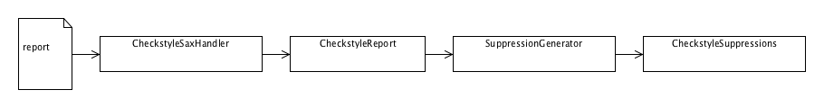
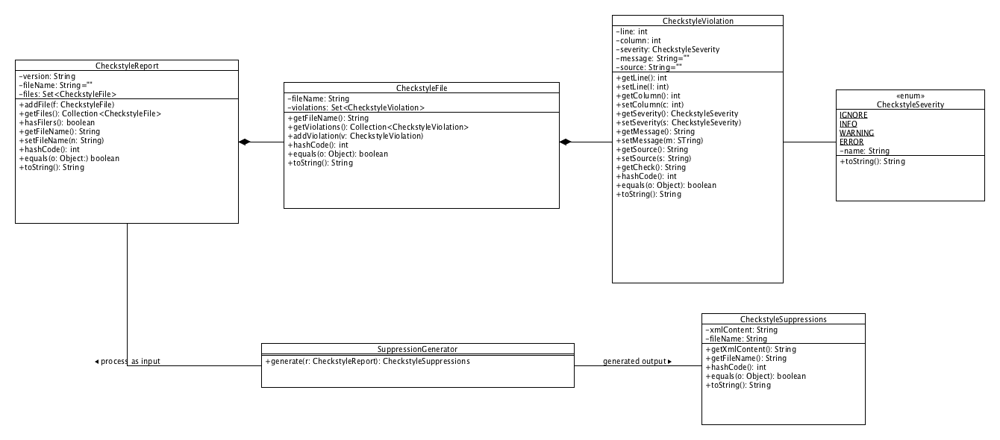

The base architecture is as followed: The Checkstyle reports are parsed with a SAX based parser into a semantic model which represents the Checkstyle reports. These report models are then transformed by a generator into XML suppressions files.

The model constists basicaly of two parts: A object tree representing a Checkstyle report and a class representing a Checkstyle suppressions configuration.
The report model represents the report as near as possible like the XML: The root object for each report is a CheckstyleReport object. This report object contains for each reported source file a CheckstyleFile object. This contains for each found error a CheckstyleViolation object. This classes are simple value objects.
The suppressions configuration model consists only of one class yet: CheckstyleSuppressions. This holds the formatted XML string for the supressions configuration and the file name to store the XML in.
